Trajectory Evaluation Study
This page is the summary of "A Tutorial on Quantitative Trajectory Evaluation for Visual(-Inertial) Odometry". It has proposed principled methods to quantitatively evaluate the quality of an estimated trajectory from visual(-inertial) odometry (VO/VIO). Actually, this method could also be used for both map and localization evaluation.
Given a estimated trajectory and ground truth trajectory, they are from different reference frame/coordinate and their state temporal correspondences are known (important assumption) . How to evaluate the performance of estimated trajectory?
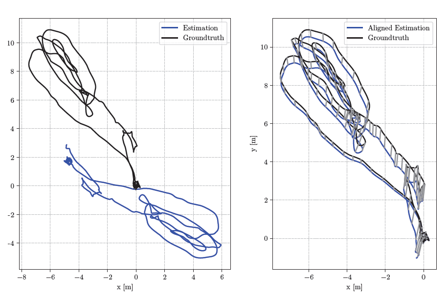
How to align trajectories
As both trajectories has different coordinate origin, we can't compute their distance directly. In common practice, we should align the estimated trajectory  to the ground truth trajectory
to the ground truth trajectory  so that we can find an equivalent estimation
so that we can find an equivalent estimation  which is closest to
and also uniquely define the estimation error of
. The alignment can be described as parameterized transformation
which is closest to
and also uniquely define the estimation error of
. The alignment can be described as parameterized transformation  , s is for scalar, R is for rotation and t is for translation.
, s is for scalar, R is for rotation and t is for translation.
Ambiguities/constraints of trajectory alignment for different sensor configurations
There are some constraints of alignment for different sensor set. Let's first discuss the ambiguities or equivalent parameters in different visual(-inertial) setups. As we know, the non-linear least square problem has certain ambiguities, there may be infinite solutions that have the same minimum cost and the parameters that are different but equivalent. E.g. the mono visual-only odometry are lack of scale factor, the estimation about translation are ambiguities. But it's different for stereo and IMU sensor set.
monocular measurement model 7-DoF
The alignment could be treated as similarity transform. It won't change the pixel reprojection location on image if we zoom in/out or move or rotate the whole scene. The result of nonlinear least square will be equivalent if the scene points are similarity transformed. So we have 7-DoF about alignment transformation.
stereo measurement model 6-DoF
The scale is observable or determined from stereo camera. The pixel reprojection location can be hold only if  , we can't zoom in/out the scene otherwise it's inconsistent with stereo camera measurement. The result of nonlinear least square will be equivalent if the scene points are rigidly transformed. So alignment transformation becomes a rigid body transformation with 6-DoF.
, we can't zoom in/out the scene otherwise it's inconsistent with stereo camera measurement. The result of nonlinear least square will be equivalent if the scene points are rigidly transformed. So alignment transformation becomes a rigid body transformation with 6-DoF.
inertial measurement model 4-DoF
Both scale and gravity vector(pitch and roll) are observable from inertial sensor, the transformed measurement remain unchanged only when
and  . For the rotation, the alignment can only rotate the scene around z-axis (rotation around gravity). Now the alignment becomes yaw-only rigid body transformation. The result of nonlinear least square will be equivalent if the scene points are moved or rotated around the z-axis. It has 4-DoF (yaw + translation).
. For the rotation, the alignment can only rotate the scene around z-axis (rotation around gravity). Now the alignment becomes yaw-only rigid body transformation. The result of nonlinear least square will be equivalent if the scene points are moved or rotated around the z-axis. It has 4-DoF (yaw + translation).
The yaw-only rotation can be defined as,
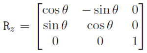
Trajectory alignment algorithm
Given the estimated positions  and the ground truth positions
and the ground truth positions  , we want to find the similarity or rigid transformation (s=1) which satisfices,
, we want to find the similarity or rigid transformation (s=1) which satisfices,
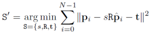
To solve the least squares problem, the method is summarized as below and ignore the math prove steps. If a yaw-only rigid body transformation is desired, we need to adapt the rotation calculation in Umeyama’s method as below.
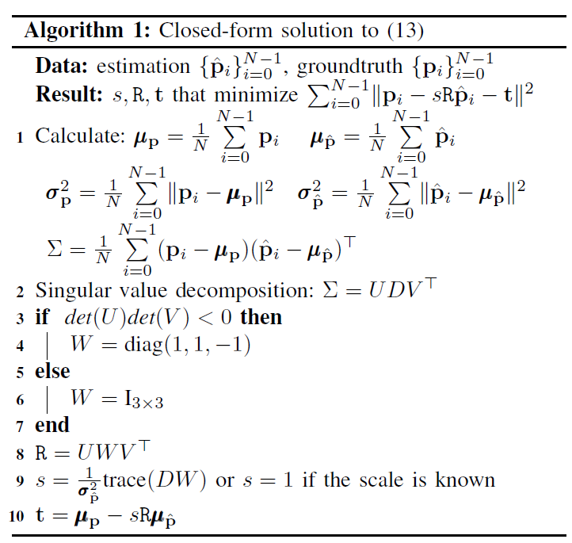
Trajectory error metrics
Here is the summary,
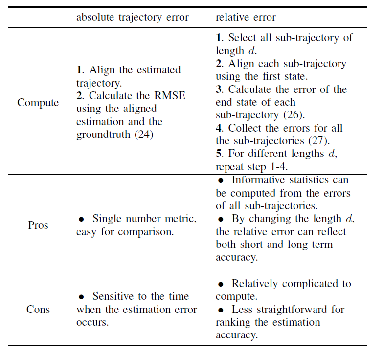
Absolute trajectory error (ATE)
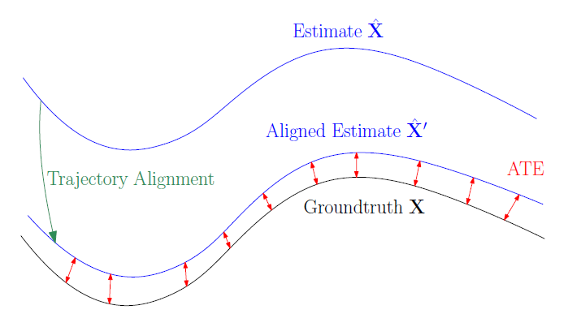
After trajectory alignment, for a single state, the error between  and the ground truth
and the ground truth  can be parameterized as,
can be parameterized as,
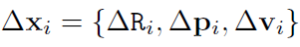
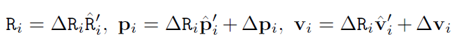
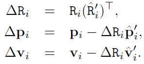
To quantify the quality of the whole trajectory, the root mean square error (RMSE) is usually used,
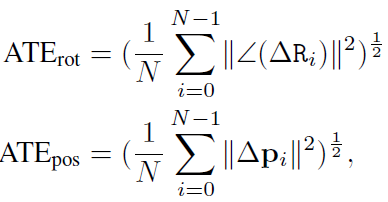
where  means converting the rotation matrix to angle axis representation and using the norm of rotation angles(
omegax, omegay, omegaz
) as the error.
means converting the rotation matrix to angle axis representation and using the norm of rotation angles(
omegax, omegay, omegaz
) as the error.
Question: How Many Frames to Align?
There is no standard for selecting the number of states to be used for trajectory alignment. The position ATE decreases when more states are used in the alignment, while the rotation ATE does not show a obvious tendency. Intuitively, since the trajectory alignment aims to minimize the least squares position error, the more states that are used, the smaller the position ATE is likely to be. The rotation components are not used in computing the alignment transformation and thus are less correlated.
In practice, when comparing different algorithms, one needs to be consistent in which states are used for trajectory alignment across different algorithms for a fair comparison.
Relative Error(RE)
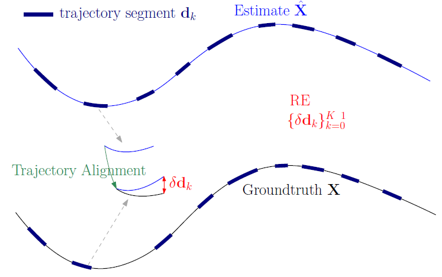
The basic idea of relative error is that, since VO/VIO systems do not have a global reference (global position and yaw), the estimation quality can be evaluated by measuring the relative relations between the states at different times.
Select K pairs set of states by some criteria (e.g., distance along the trajectory) from
. and each pair defines a sub-trajectory and a relative error of sub-trajectory is calculated in a similar way as the absolute error.
Hence, there is no big difference between RE and ATE except the alignment is done by first state and error is calculated by end state in each sub-trajectory. From RE, we can get a collection of errors ("ATE" for small range) for all the sub-trajectories.
Based on that,
statistics such as the median, average and percentiles can be calculated, which gives more information than ATE.
selecting the states according to different criteria, RE can have different meanings
a larger distance of state pairs reflects more the long-term accuracy
a smaller distance of state pairs reflects the local consistency
Tips:
As for sub trajectory alignment, it's not like the Umeyama method. Please check the code in the end of this page. It just identify the start and end point by segment and compare the both of relative transformation from start to end.
RE Computation
For each pair,
1.get the start and end pose from EST sub trajectory, calculate the pose transform between start and end pose → T_c1_c2
2.get the start and end pose from GT sub trajectory, calculate the pose transform between start and end pose → T_m1_m2
3.compute the pose error → Eigen::Matrix4d T_error_in_c2 = ov_core::Inv_se3(T_m1_m2) * T_c1_c2;
4.Rotate rotation so that rotation error is in the global frame (allows us to look at yaw error)
Single Run Consistency
This metric is not discussed in the paper but provided by OpenVINS. Usually, the localization result contains pose and uncertainty  . We can compute the pose error against ground truth and also plot the localization
. We can compute the pose error against ground truth and also plot the localization  estimation bound.
This provides insight into if the estimator is becoming over confident at certain timesteps. E.g. the uncertainty is small whereas the pose error is quite large.
estimation bound.
This provides insight into if the estimator is becoming over confident at certain timesteps. E.g. the uncertainty is small whereas the pose error is quite large.
Additionally, the tools from OpenVINS can also evaluate the runtime performance(timing, memory, cpu load) for each "node" of VINS algorithm.
Code Study and Tooling
Reference Link: ov_eval namespace | OpenVINS
create association between gt and est trajectory by time stamp
Assumption, the time delay between GT and estimator is constant which is described by "offset". The time difference of correspondence pair should be smaller than max_difference.
//ov_eval\src\alignment\AlignUtils.cppAlignUtils::perform_association(offset, max_difference, est_times, gt_times, est_poses, gt_poses, est_covori, est_covpos, gt_covori, gt_covpos);// Intersect timestamps, in ov_eval\src\calc\ResultTrajectory.cpp// attention: ov_eval has fixed 20ms max_difference thresholdAlignUtils::perform_association(0, 0.02, est_times, gt_times, est_poses, gt_poses, est_covori, est_covpos, gt_covori, gt_covpos);The code below will try to find closest GT pose for each estimate.
If the time stamp between gt and est is larger than 20ms, then the GT data will be ignored and not be used to compute the error.
If the time stamp between gt and est is smaller than 20ms and found, then it will try to refine the matching and find a closer GT time stamp within 20ms.
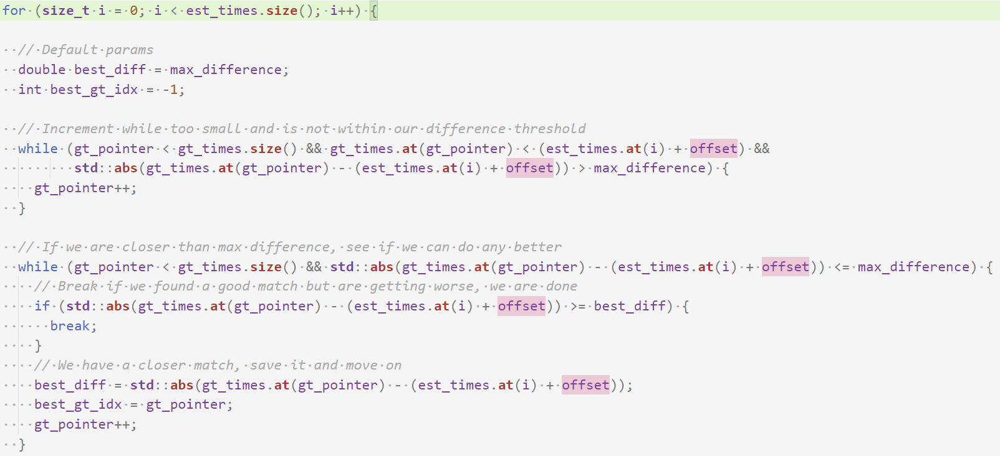
And the "EVO (MichaelGrupp/evo: Python package for the evaluation of odometry and SLAM (github.com))" has the same situation, here the max time difference threshold is 10ms.
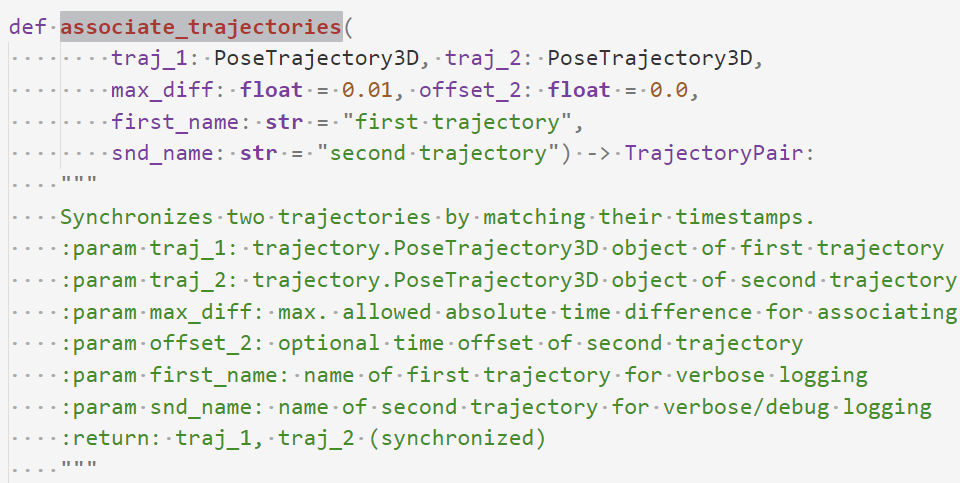
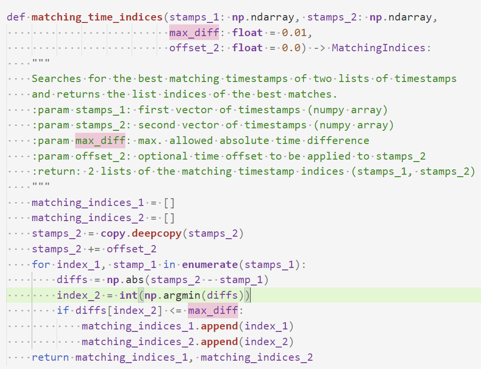
trajectory alignment
the user should provide align mode, posyaw(4DoF) , posyawsingle , se3(6DoF) , se3single , sim3(7DoF) , and none .
// AlignUtils::align_umeyama // Substract mean of each trajectory Eigen::Matrix<double, 3, 1> mu_M = get_mean(model); Eigen::Matrix<double, 3, 1> mu_D = get_mean(data); std::vectordouble, 3, 1>> model_zerocentered, data_zerocentered; for (size_t i = 0; i < model.size(); i++) { model_zerocentered.push_back(model[i] - mu_M); data_zerocentered.push_back(data[i] - mu_D); } // Get correlation matrix double n = model.size(); Eigen::Matrix<double, 3, 3> C = Eigen::Matrix<double, 3, 3>::Zero(); for (size_t i = 0; i < model_zerocentered.size(); i++) { C.noalias() += model_zerocentered[i] * data_zerocentered[i].transpose(); } C *= 1.0 / n; // Get data sigma double sigma2 = 0; for (size_t i = 0; i < data_zerocentered.size(); i++) { sigma2 += data_zerocentered[i].dot(data_zerocentered[i]); } sigma2 *= 1.0 / n; // SVD decomposition Eigen::JacobiSVDdouble, 3, 3>> svd(C, Eigen::ComputeFullV | Eigen::ComputeFullU); Eigen::Matrix<double, 3, 3> U_svd = svd.matrixU(); Eigen::Matrix<double, 3, 1> D_svd = svd.singularValues(); Eigen::Matrix<double, 3, 3> V_svd = svd.matrixV(); Eigen::Matrix<double, 3, 3> S = Eigen::Matrix<double, 3, 3>::Identity(); if (U_svd.determinant() * V_svd.determinant() < 0) { S(2, 2) = -1; } // If only yaw, use that specific solver (optimizes over yaw angle) // Else get best full 3 dof rotation if (yaw_only) { Eigen::Matrix<double, 3, 3> rot_C = n * C.transpose(); double theta = AlignUtils::get_best_yaw(rot_C); R = ov_core::rot_z(theta); } else { R.noalias() = U_svd * S * V_svd.transpose(); } // If known scale, fix it if (known_scale) { s = 1; } else { // Get best scale s = 1.0 / sigma2 * (D_svd.asDiagonal() * S).trace(); } // Get best translation t.noalias() = mu_M - s * R * mu_D;ATE and RPE computation
//ate computation, ResultTrajectory::calculate_ate// Calculate the position and orientation error at every timestep for (size_t i = 0; i < est_poses_aignedtoGT.size(); i++) { // Calculate orientation error Eigen::Matrix3d e_R = ov_core::quat_2_Rot(est_poses_aignedtoGT.at(i).block(3, 0, 4, 1)).transpose() * ov_core::quat_2_Rot(gt_poses.at(i).block(3, 0, 4, 1)); double ori_err = 180.0 / M_PI * ov_core::log_so3(e_R).norm(); // Calculate position error double pos_err = (gt_poses.at(i).block(0, 0, 3, 1) - est_poses_aignedtoGT.at(i).block(0, 0, 3, 1)).norm(); // Append this error! error_ori.timestamps.push_back(est_times.at(i)); error_ori.values.push_back(ori_err); error_pos.timestamps.push_back(est_times.at(i)); error_pos.values.push_back(pos_err); }//re computation, ResultTrajectory::calculate_rpestd::vector<double> segments = {8.0, 16.0, 24.0, 32.0, 40.0};//custom defined // Loop through each segment length for (const double &distance : segment_lengths) { // Our stats for this length Statistics error_ori, error_pos; // Get end of subtrajectories for each possible starting point // NOTE: is there a better way to select which end pos is a valid segments that are of the correct lenght? // NOTE: right now this allows for longer segments to have bigger error in their start-end distance vs the desired segment length // std::vector comparisons = compute_comparison_indices_length(accum_distances, distance, 0.1*distance); std::vector<int> comparisons = compute_comparison_indices_length(accum_distances, distance, max_dist_diff); assert(comparisons.size() == gt_poses.size()); // Loop through each relative comparison for (size_t id_start = 0; id_start < comparisons.size(); id_start++) { // Get the end id (skip if we couldn't find an end) int id_end = comparisons[id_start]; if (id_end == -1) continue; //=============================================================================== // Get T I1 to world EST at beginning of subtrajectory (at state idx) Eigen::Matrix4d T_c1 = Eigen::Matrix4d::Identity(); T_c1.block(0, 0, 3, 3) = ov_core::quat_2_Rot(est_poses_aignedtoGT.at(id_start).block(3, 0, 4, 1)).transpose(); T_c1.block(0, 3, 3, 1) = est_poses_aignedtoGT.at(id_start).block(0, 0, 3, 1); // Get T I2 to world EST at end of subtrajectory starting (at state comparisons[idx]) Eigen::Matrix4d T_c2 = Eigen::Matrix4d::Identity(); T_c2.block(0, 0, 3, 3) = ov_core::quat_2_Rot(est_poses_aignedtoGT.at(id_end).block(3, 0, 4, 1)).transpose(); T_c2.block(0, 3, 3, 1) = est_poses_aignedtoGT.at(id_end).block(0, 0, 3, 1); // Get T I2 to I1 EST Eigen::Matrix4d T_c1_c2 = ov_core::Inv_se3(T_c1) * T_c2; //=============================================================================== // Get T I1 to world GT at beginning of subtrajectory (at state idx) Eigen::Matrix4d T_m1 = Eigen::Matrix4d::Identity(); T_m1.block(0, 0, 3, 3) = ov_core::quat_2_Rot(gt_poses.at(id_start).block(3, 0, 4, 1)).transpose(); T_m1.block(0, 3, 3, 1) = gt_poses.at(id_start).block(0, 0, 3, 1); // Get T I2 to world GT at end of subtrajectory starting (at state comparisons[idx]) Eigen::Matrix4d T_m2 = Eigen::Matrix4d::Identity(); T_m2.block(0, 0, 3, 3) = ov_core::quat_2_Rot(gt_poses.at(id_end).block(3, 0, 4, 1)).transpose(); T_m2.block(0, 3, 3, 1) = gt_poses.at(id_end).block(0, 0, 3, 1); // Get T I2 to I1 GT Eigen::Matrix4d T_m1_m2 = ov_core::Inv_se3(T_m1) * T_m2; //=============================================================================== // Compute error transform between EST and GT start-end transform Eigen::Matrix4d T_error_in_c2 = ov_core::Inv_se3(T_m1_m2) * T_c1_c2; Eigen::Matrix4d T_c2_rot = Eigen::Matrix4d::Identity(); T_c2_rot.block(0, 0, 3, 3) = T_c2.block(0, 0, 3, 3); Eigen::Matrix4d T_c2_rot_inv = Eigen::Matrix4d::Identity(); T_c2_rot_inv.block(0, 0, 3, 3) = T_c2.block(0, 0, 3, 3).transpose(); // Rotate rotation so that rotation error is in the global frame (allows us to look at yaw error) Eigen::Matrix4d T_error_in_w = T_c2_rot * T_error_in_c2 * T_c2_rot_inv; //=============================================================================== // Compute error for position error_pos.timestamps.push_back(est_times.at(id_start)); error_pos.values.push_back(T_error_in_w.block(0, 3, 3, 1).norm()); // Calculate orientation error double ori_err = 180.0 / M_PI * ov_core::log_so3(T_error_in_w.block(0, 0, 3, 3)).norm(); error_ori.timestamps.push_back(est_times.at(id_start)); error_ori.values.push_back(ori_err); }